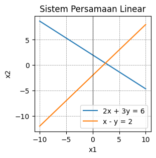
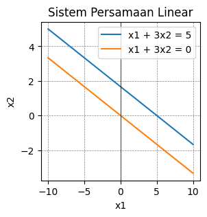
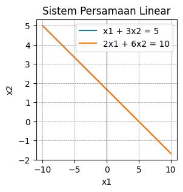
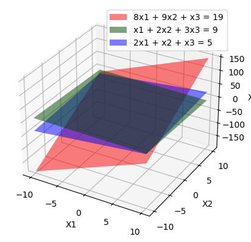

Sistem Linear#
sistem linear solusi tunggal#
dua garis yang berpotongan
import numpy as np
import matplotlib.pyplot as plt
# Persamaan pertama: 2x + 3y = 6
x1_1 = np.linspace(-10, 10, 100)
x1_2 = (6 - 2*x1_1) / 3
# Persamaan kedua: x - y = 2
x2_1 = np.linspace(-10, 10, 100)
x2_2 = x2_1 - 2
# Menggambar grafik
plt.figure(figsize=(3, 3))
plt.plot(x1_1, x1_2, label='2x + 3y = 6')
plt.plot(x2_1, x2_2, label='x - y = 2')
plt.xlabel('x1')
plt.ylabel('x2')
plt.title('Sistem Persamaan Linear')
plt.axvline(0, color='black',linewidth=0.5)
plt.grid(color = 'gray', linestyle = '--', linewidth = 0.5)
plt.legend()
plt.show()

sistem linear tanpa solusi#
garis yang tidak berpotongan dan tidak berhimpit
# Persamaan pertama: x1 + 3x2 = 5
x1_1 = np.linspace(-10, 10, 100)
x1_2 = (x1_1 - 5) / -3
# Persamaan kedua: x1 + 3x2 = 0
x2_1 = np.linspace(-10, 10, 100)
x2_2 = (x2_1 - 0) / -3
# Menggambar grafik
plt.figure(figsize=(3, 3))
plt.plot(x1_1, x1_2, label='x1 + 3x2 = 5')
plt.plot(x2_1, x2_2, label='x1 + 3x2 = 0')
plt.xlabel('x1')
plt.ylabel('x2')
plt.title('Sistem Persamaan Linear')
plt.axvline(0, color='black',linewidth=0.5)
plt.grid(color = 'gray', linestyle = '--', linewidth = 0.5)
plt.legend()
plt.show()

sistem linear banyak solusi#
garis yang berhimpit
# Persamaan pertama: x1 + 3x2 = 5
x1_1 = np.linspace(-10, 10, 100)
x1_2 = (x1_1 - 5 ) / -3
# Persamaan kedua: 2x1 + 6x2 = 10
x2_1 = np.linspace(-10, 10, 100)
x2_2 = (2*x2_1 - 10) / -6
# Menggambar grafik
plt.figure(figsize=(3, 3))
plt.plot(x1_1, x1_2, label='x1 + 3x2 = 5')
plt.plot(x2_1, x2_2, label='2x1 + 6x2 = 10')
plt.xlabel('x1')
plt.ylabel('x2')
plt.title('Sistem Persamaan Linear')
plt.axvline(0, color='black',linewidth=0.5)
plt.grid(color = 'gray', linestyle = '--', linewidth = 0.5)
plt.legend()
plt.show()

Tugas 1 : Menggambar Bidang pada Ruang Tiga Dimensi#
PERSAMAAN YANG AKAN DI GAMBAR:
\[\begin{split}
8x_1 + 9x_2 + x_3 = 19 \\1
x_1 + 2x_2 + 3x_3 = 9 \\
2x_1 + x_2 + x_3 = 5
\end{split}\]
#code
import numpy as np
import matplotlib.pyplot as plt
# Membuat Rentang x1 dan x2
rentang_x1 = np.linspace(-10,10,50) # membuat garis x1 dengan rentang -10 dampai 10, dan 50 untuk resolusi bidang yang akan kita buat
rentang_x2 = np.linspace(-10,10,50)
# Membuat grid dari rentang yang telah di buat
x1, x2 = np.meshgrid(rentang_x1, rentang_x2)
x3_1 = 8*x1 + 9*x2 - 19 # representasi dari 8x1 + 9x2 - 19 = x3, persamaan pertama
x3_2 = (x1 + 2*x2 - 9) / -3 # representasi dari x2 + 2x2 - 9 = (3x3 -> x2 + 2x2 -9) / 3 = x3, persamaan kedua
x3_3 = 2*x1 + x2 - 5 # representasi dati persamaan ke tiga
# Membuat bidang
fig = plt.figure()
ax = fig.add_subplot(111, projection="3d")
# Membuat bidang persamaan 1
# keterangan :
# alpha = transparansi
# rstride = kepadatan gambar sumbu x1
# cstride = kepadatan gambar sumbu x2
# color = warna bidang
ax.plot_surface(x1,x2,x3_1, alpha=0.5, rstride=100, cstride=100, color="r", label="8x1 + 9x2 + x3 = 19")
# membuat bidang persamaan 2
ax.plot_surface(x1,x2,x3_2, alpha=0.5, rstride=100, cstride=100, color="g", label="x1 + 2x2 + 3x3 = 9")
# Membuat bidang persamaan 3
ax.plot_surface(x1,x2,x3_3, alpha=0.5, rstride=100, cstride=100, color="b", label="2x1 + x2 + x3 = 5")
# membuat ketrangan sumbu
ax.set_xlabel("X1")
ax.set_ylabel("X2")
ax.set_zlabel("X3")
# Menggambar bidang
plt.legend()
plt.show()

Penyelesaian Sistem Persamaan Linear#
import numpy as np
A = np.array([[8,9,1,19],[1,2,3,9],[2,1,1,5]])
print(A)
[[ 8 9 1 19]
[ 1 2 3 9]
[ 2 1 1 5]]
def RowSwap(A,k,l):
# =============================================================================
# A is a NumPy array. RowSwap will return duplicate array with rows
# k and l swapped.
# =============================================================================
m = A.shape[0] # m is number of rows in A
n = A.shape[1] # n is number of columns in A
B = np.copy(A).astype('float64')
for j in range(n):
temp = B[k][j]
B[k][j] = B[l][j]
B[l][j] = temp
return B
def RowScale(A,k,scale):
# =============================================================================
# A is a NumPy array. RowScale will return duplicate array with the
# entries of row k multiplied by scale.
# =============================================================================
m = A.shape[0] # m is number of rows in A
n = A.shape[1] # n is number of columns in A
B = np.copy(A).astype('float64')
for j in range(n):
B[k][j] *= scale
return B
def RowAdd(A,k,l,scale):
# =============================================================================
# A is a numpy array. RowAdd will return duplicate array with row
# l modifed. The new values will be the old values of row l added to
# the values of row k, multiplied by scale.
# =============================================================================
m = A.shape[0] # m is number of rows in A
n = A.shape[1] # n is number of columns in A
B = np.copy(A).astype('float64')
for j in range(n):
B[l][j] += B[k][j]*scale
return B
A1 = RowSwap(A, 0, 1)
print(A1, '\n')
A2 = RowAdd(A1, 0, 1, -8)
print(A2, '\n')
A3 = RowAdd(A2, 0, 2, -2)
print(A3, '\n')
A4 = RowScale(A3, 1, -1/7)
print(A4, '\n')
A5 = RowAdd(A4, 1, 2, 3)
print(A5, '\n')
A6 = RowScale(A5, 2, 1/4.85714286)
print(A6)
[[ 1. 2. 3. 9.]
[ 8. 9. 1. 19.]
[ 2. 1. 1. 5.]]
[[ 1. 2. 3. 9.]
[ 0. -7. -23. -53.]
[ 2. 1. 1. 5.]]
[[ 1. 2. 3. 9.]
[ 0. -7. -23. -53.]
[ 0. -3. -5. -13.]]
[[ 1. 2. 3. 9. ]
[ -0. 1. 3.28571429 7.57142857]
[ 0. -3. -5. -13. ]]
[[ 1. 2. 3. 9. ]
[-0. 1. 3.28571429 7.57142857]
[ 0. 0. 4.85714286 9.71428571]]
[[ 1. 2. 3. 9. ]
[-0. 1. 3.28571429 7.57142857]
[ 0. 0. 1. 2. ]]
persamaanya adalah:
\[\begin{split}
x_1 + 2x_2 + 3x_3 = 9 \\
x_2 + 3.28571429x_3 = 7.57142857 \\
x_3 = 2
\end{split}\]
x3 = 2
print('x3 = ', x3)
x2 = round(- 3.28571429 * 2 + 7.57142857)
print('x2 = ', x2)
x1 = round(9 - (2 * x2) - (3 * 2))
print('x1 = ', x1)
x3 = 2
x2 = 1
x1 = 1